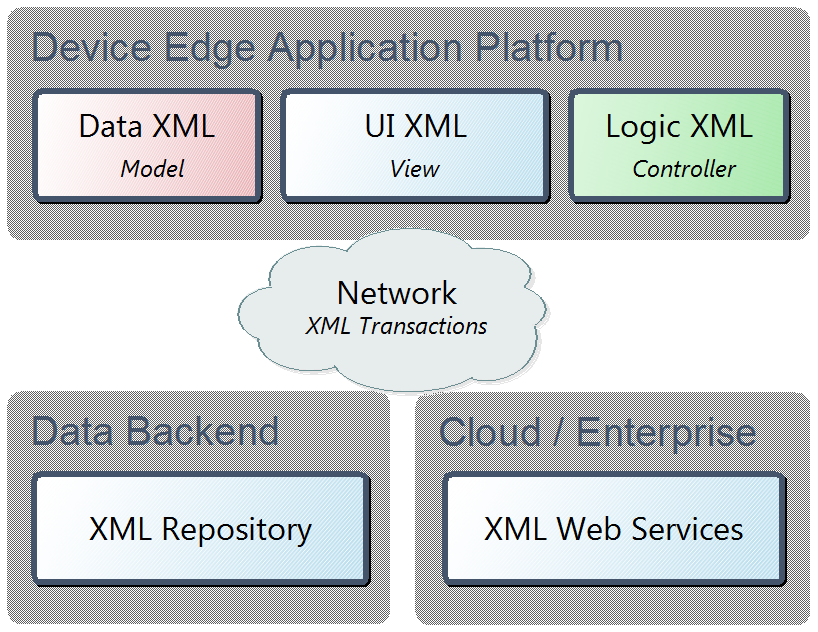

The set goals, including the full separation of Model, View, and Controller of an application and the full utilization of XML, requires three new XML applications to be developed:
A generic data model in XML that can hold any XML application needed by the developer defined software (model).
A way to describe user interfaces in XML (view).
The ability to write program logic for the application using XML (controller)
All with the ability to exchange data with a cloud-based backend using XML and XML delta transactions.
Figure 2. XML applications required to be developed
|  |
The application written on top of the Device Edge Application Platform also requires some type of XML application as a manifest to be described and linked to all its required resources. The above figure 2 suggests a technology that consumes and produces XML, that runs applications written in XML, and communicates changes to XML using XML delta transactions.
In addition, a specialized XML application to allow declarative definitions of intelligent data bindings between XML data and user interface components described in the UI XML language is needed. This will allow any developed UI component like a tree, menu, tab strip, or toolbar to be bound to any type of XML and listen to data changes on the XML or update the XML according to user interaction.
It would be wise to reuse as much as possible of existing XML standards like XSLT, XPath, XPointer, XLink, and ATOM to be used together with any new XML applications developed for the projects.